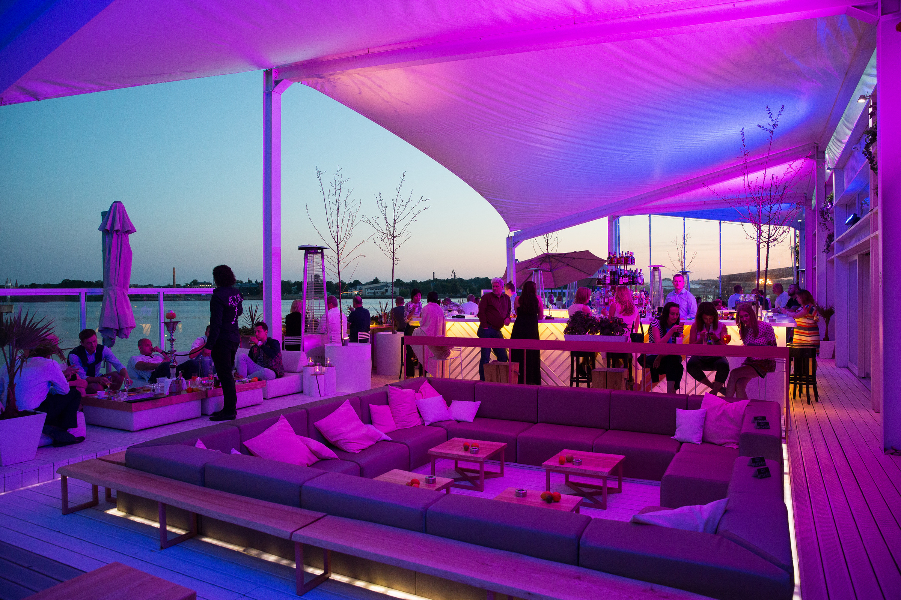

Ночная Жизнь
Одно из самых популярных мест для вечеринок - это Старая Рига (Вецрига). Она идеально подходит для тех, кто хочет меньше гулять и больше танцевать. Бары и клубы расположены в шаговом расстоянии друг от друга. Клубы и бары Старого города ценятся и местными жителями, и туристами, потому что здесь можно найти все - широкий ассортимент напитков, актуальные матчи в спорт-барах, концерты живой музыки и выступления лучших диджеев на танцплощадках.
Где повеселиться ночью?
Рига не то чтобы очень маленькая, просто здесь все расположено ближе! Забудь о долгих переездах (и больших расходах на такси) – достаточно одного вечера, чтобы побывать в нескольких горячих местечках Старой Риги. Небольшие расстояния ты пройдешь пешком, и мы гарантируем, что до первых петухов ты успеешь побывать во всех местах, отмеченных на карте. Как известно, время в веселых разговорах пролетает незаметно.Некоторые предложения по маршрутам:
- В Риге есть бар, где заодно можно и привести в порядок бороду – это Vest!
- У нас есть бар, расположенный в одном из самых ярких памятников архитектуры барокко в Риге – это Latvijas 1.rokkafejnīca!
- Побалуй себя и закажи особый городской коктейль Clavis Riga в одном из баров с уникальными видами из окна – Skyline и Star Lounge! Эти заведения расположены на верхних этажах гостиниц, и можно любоваться городом с высоты.
- Нарядись и отправляйся в один из гламурных клубов города. Например, в клубе Coyote Fly есть терраса с видом на Верманский сад, а в клубе First – терраса с видом на Даугаву!
- "Spot Kafe" - место, где встречаются друзья, чтобы подзарядиться энергией перед посещением клуба или после него. Нередко гости остаются в баре "Spot Kafe", потому что в выходные о музыкальном сопровождение здесь заботится диджей.
- Джазовый клуб в сердце Cтарой Риги известен любителям хорошей музыки и вкусной еды со всего мира. В небольшом уютном помещении почти каждый вечер звучат всевозможные джазовые вариации в исполнении ведущих латвийских и международных музыкантов, а в ресторане подаются блюда европейской кухни и национальные латышские блюда.
Практическая информация
Возрастное ограничение в ночных клубах: 18+. Алкогольные напитки также можно покупать с 18-летнего возраста.
В большинстве развлекательных мест нет входной платы либо она символическая.
тобы уменьшить возможность отрицательных впечатлений о Риге, предлагаем не заходить в подозрительные места. Информация о таких местах доступна на сайтах посольств. Если вы столкнулись с недобросовестным обслуживанием, свяжитесь с туристической полицией Рижской полиции самоуправления по телефону +371 67181818.